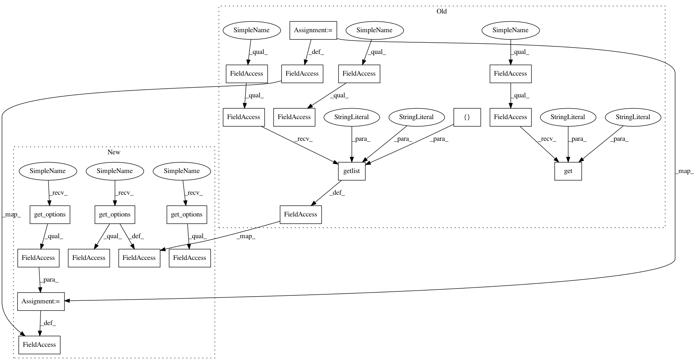

04a368c3617d3ceac60170f6a68428bdfd815cb1,src/python/pants/backend/codegen/tasks/protobuf_gen.py,ProtobufGen,__init__,#ProtobufGen#,64
Before Change
Generates Java and Python files from .proto files using the Google protobuf compiler.
super(ProtobufGen, self).__init__(*args, **kwargs)
self.protoc_supportdir = self.context.config.get("protobuf-gen", "supportdir",
default=_PROTOBUF_GEN_SUPPORTDIR_DEFAULT)
self.protoc_version = self.context.config.get("protobuf-gen", "version",
default=_PROTOBUF_VERSION_DEFAULT)
self.plugins = self.context.config.getlist("protobuf-gen", "plugins", default=[])
self.java_out = os.path.join(self.workdir, "gen-java")
self.py_out = os.path.join(self.workdir, "gen-py")
After Change
Generates Java and Python files from .proto files using the Google protobuf compiler.
super(ProtobufGen, self).__init__(*args, **kwargs)
self.protoc_supportdir = self.get_options().supportdir
self.protoc_version = self.get_options().version
self.plugins = self.get_options().plugins
self.java_out = os.path.join(self.workdir, "gen-java")
self.py_out = os.path.join(self.workdir, "gen-py")
In pattern: SUPERPATTERN
Frequency: 3
Non-data size: 21
Instances
Project Name: pantsbuild/pants
Commit Name: 04a368c3617d3ceac60170f6a68428bdfd815cb1
Time: 2015-02-10
Author: zundel@squareup.com
File Name: src/python/pants/backend/codegen/tasks/protobuf_gen.py
Class Name: ProtobufGen
Method Name: __init__
Project Name: pantsbuild/pants
Commit Name: ee0732a42bdd614baf0e065326f1f6872a041d3a
Time: 2014-11-04
Author: benjyw@gmail.com
File Name: src/python/pants/backend/core/tasks/markdown_to_html.py
Class Name: MarkdownToHtml
Method Name: __init__
Project Name: pantsbuild/pants
Commit Name: 8644bcae650cf01b682db6a7dc5af223c53532ad
Time: 2015-02-09
Author: zundel@squareup.com
File Name: src/python/pants/backend/codegen/tasks/protobuf_gen.py
Class Name: ProtobufGen
Method Name: __init__
Project Name: pantsbuild/pants
Commit Name: 04a368c3617d3ceac60170f6a68428bdfd815cb1
Time: 2015-02-10
Author: zundel@squareup.com
File Name: src/python/pants/backend/codegen/tasks/protobuf_gen.py
Class Name: ProtobufGen
Method Name: __init__